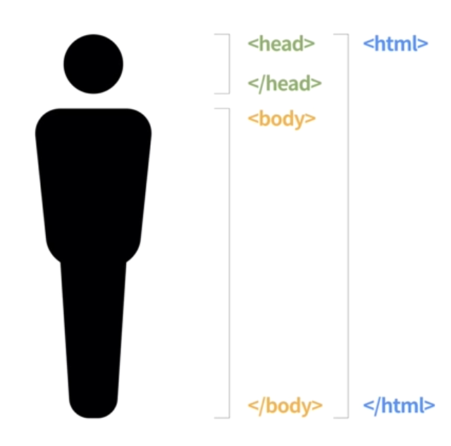
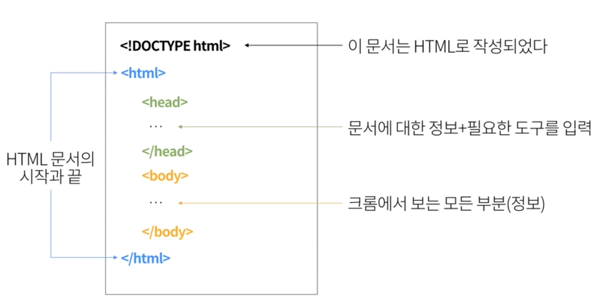
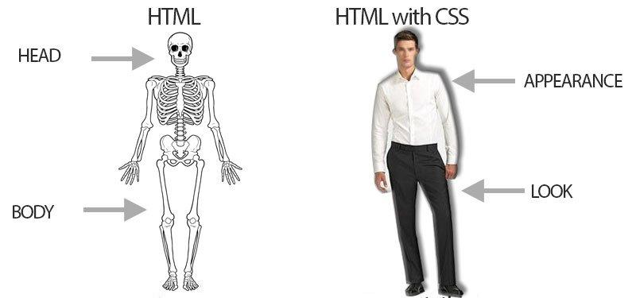

<!doctype html>
<html>
	<head>
		<meta charset="utf-8">
		<meta name="viewport" content="width=device-width, initial-scale=1.0, maximum-scale=1.0, user-scalable=no">

		<title>01_web</title>

		<link rel="stylesheet" href="css/reveal.css">
		<link rel="stylesheet" href="css/theme/white.css">

		<!-- Theme used for syntax highlighting of code -->
		<link rel="stylesheet" href="lib/css/zenburn.css">

		<!-- Printing and PDF exports -->
		<script>
			var link = document.createElement( 'link' );
			link.rel = 'stylesheet';
			link.type = 'text/css';
			link.href = window.location.search.match( /print-pdf/gi ) ? 'css/print/pdf.css' : 'css/print/paper.css';
			document.getElementsByTagName( 'head' )[0].appendChild( link );
		</script>
	</head>
	<body>
		<div class="reveal">
			<div class="slides">
				<section data-markdown
                 data-separator="^~~!~~"  
                 data-separator-vertical="^~!~"  
                 data-separator-notes="^Note:">
          <script type="text/template">
          # Web

          ~~!~~

          ## Web Service

          ~!~

          ### 서비스?

          ~!~

          **무언가**를 **제공** 하는 것

          ~!~

          ### 웹 서비스
          <br>

          **웹**(_**W**orld **W**ide **W**eb_)을 통해 
          <br>
          **무언가**를 
          <br>
          **제공**하는 것

          Note:
          말은 간단하죠?

          ~!~

          #### 각 사이트가 제공하는 것

          

          ~~!~~

          ## Service

          ~!~

          무언가를 **서비스**에 
          <br>
          <br>
          **요청**하고(Request)
          <br>
          **→**
          <br>
          **받는**다(Response)

          ~!~

          ### Caffe

          <br>

          **주문서**를 통해 **카페 주인**에게
          <br>
          <br>
          **아메리카노**를 **주문**(요청)하고 
          <br>
          <br>
          카페 주인은 주문서대로
          <br>
          <br>
          **아메리카노**를 **제공**(응답)한다

          ~!~

          ### Google

          <br>

          **검색어**로 **구글**에게
          <br>
          <br>
          **검색**을 **요청**하고 
          <br>
          <br>
          구글은 검색어대로
          <br>
          <br>
          **검색 결과**를 **응답**한다


          <!-- .slide: data-transition="fade-in" -->

          ~!~
          
          <!-- .slide: data-transition="fade-out" -->

          ### Google

          <br>

          **URL**로 **구글**에게
          <br>
          <br>
          **검색**을 **요청**하고 
          <br>
          <br>
          구글은 URL대로
          <br>
          <br>
          **검색 결과**를 **응답**한다

          ~~!~~

          ## WebService

          ~!~

          주소창을 통해 요청한다

          ~!~

          URL = 주문서

          ~!~

          ### URL(주문서)

          <br>
          <table>
            <tr>
              <th>누가</th>
              <th>어떻게</th>
              <th>무엇을</th>
            </tr>
            <tr>
              <td>google.com</td>
              <td>/search</td>
              <td>?q=</td>
            </tr>
            <tr>
              <td>search.naver.com</td>
              <td>/search.naver</td>
              <td>?query=</td>
            </tr>
            <tr>
              <td>instagram.com</td>
              <td>/</td>
              <td></td>
            </tr>
          </table>

          Note:
          다른 사이트 (네이버, 인스타그램) 보여주  

          ~!~

          우리도 서비스를 만들 때 URL 구조를 짜게 된다  

          ~~!~~

          ## HTML

          ~!~

          웹 서비스는
          <br>
          **한 장의 문서 파일**만
          <br>
          제공

          Note:
          그것이 html!
          예시 보여주기


          ~!~

          **.html**로 끝나는 파일

          ~!~

          **H**yper **T**ext **M**arkup **L**anguage

          ~!~

          ### Hyper Text

          참조(하이퍼 링크, 위치)로 이루어진 텍스트

          Note:
          동영상, 이미지, 다음 페이지의 위치
k
          ~!~

          ### Makrup Language

          마크업 언어
          <br>
          태그를 이용하여 문서의 구조를 표현

          Note:
          ORM 마크 하듯이
          표시하다
          head, body인 것을 표시하겠다

          ~~!~~

          ## HTML의 기본 구조

          ~!~

          ```html
          <!DOCTYPE html>

          <html>
             <head>

             </head>

             <body>

             </body>
          </html>
          ```

          ~!~
          
          Note:
          예시 보여주기

          ~!~

          

          ~!~

          ### 그래서?

          ~!~

          * 우리가 웹 서비스로부터 받는 문서는  
            이런 구조를 가졌다
          * 우리는 문서 한 장을 잘 줘야 한다
          * HTML을 잘 알아야 한다

          ~~!~~

          ## CSS

          ~!~

          HTML만 가지고 문서를 만들면
          <br>
          예쁘게 나오지 않는다

          ~!~

          뼈대만 있는 문서를 
          <br>
          화려하게
          예쁘게
          <br>
          만들 수 있다

          ~!~

          

          ~!~

          **C**ascading **S**tyle **S**heet

          ~!~

          ### Cascading

          > **사전** : 폭포같은, 계속되는, 연속적인


          ~~최상위 노드부터 아래로 스타일 속성들이 쭉 흘려내려(상속되어)가는 모습이~~ **마치 폭포처럼 보임**

          Note:
          > 출처 : http://www.clien.net/cs2/bbs/board.php?bo_table=kin&wr_id=2507212 
          ~!~

          ### Style Sheet

          스타일이 담겨 있는 시트

          ~!~

          스타일 담당

          ~~!~~

          ## 그래서 우리는?

          ~!~

          웹 페이지를 만들기 위해

          <br>
          HTML & CSS
 
          <br>
          공부할거임

          ~!@!~
          다음 분께 넘깁니다...

          </script>
        </section>
			</div>
		</div>

		<script src="lib/js/head.min.js"></script>
		<script src="js/reveal.js"></script>

		<script>
			// More info https://github.com/hakimel/reveal.js#configuration
			Reveal.initialize({
				history: true,
        mouseWheel: true,

				// More info https://github.com/hakimel/reveal.js#dependencies
				dependencies: [
          { src: 'socket.io/socket.io.js', async: true },
          { src: 'plugin/notes-server/client.js', async: true },
					{ src: 'plugin/markdown/marked.js' },
					{ src: 'plugin/markdown/markdown.js' },
					{ src: 'plugin/notes/notes.js', async: true },
					{ src: 'plugin/highlight/highlight.js', async: true, callback: function() { hljs.initHighlightingOnLoad(); } }
				]
			});
		</script>
	</body>
</html>
